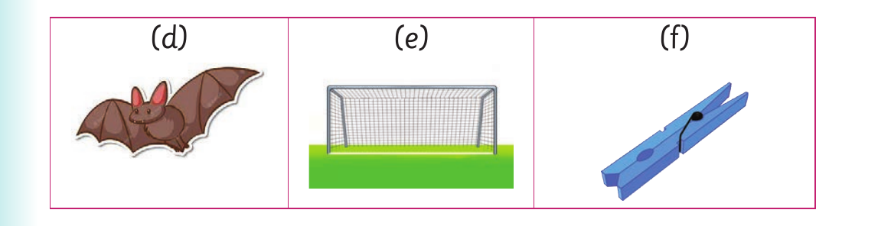

Using different sounds - final sounds

(d) (e) (f)
3. Pronounce the last sound in each word of the following pairs, Then read the words aloud. Example: goa t -goa l (a) bat-bad (b) pod-pot (c) card-cart (d) cup-cub (e) fan-fat (f) nap-nab
4. Read the following sentences aloud: (a) The goat is near the goal. (b) A big bad-looking bat hit my face. (c) The card is in the cart. (d) We met a fat boy who had a fan.